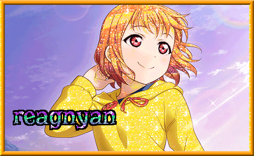
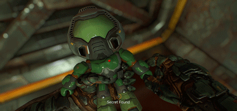
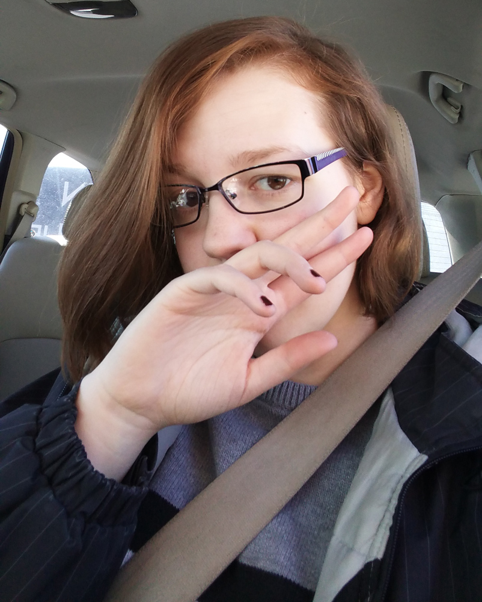
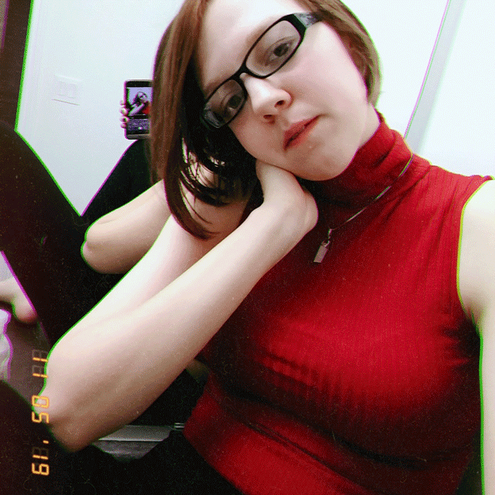
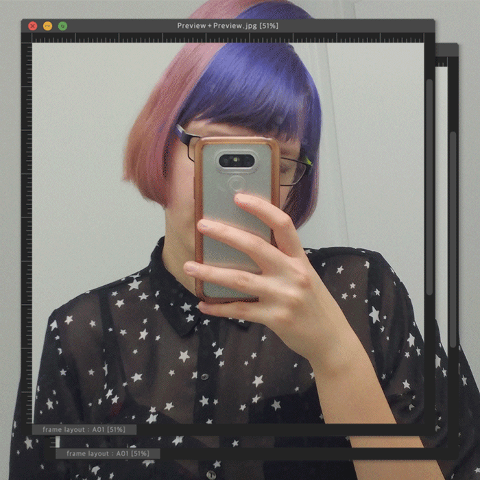
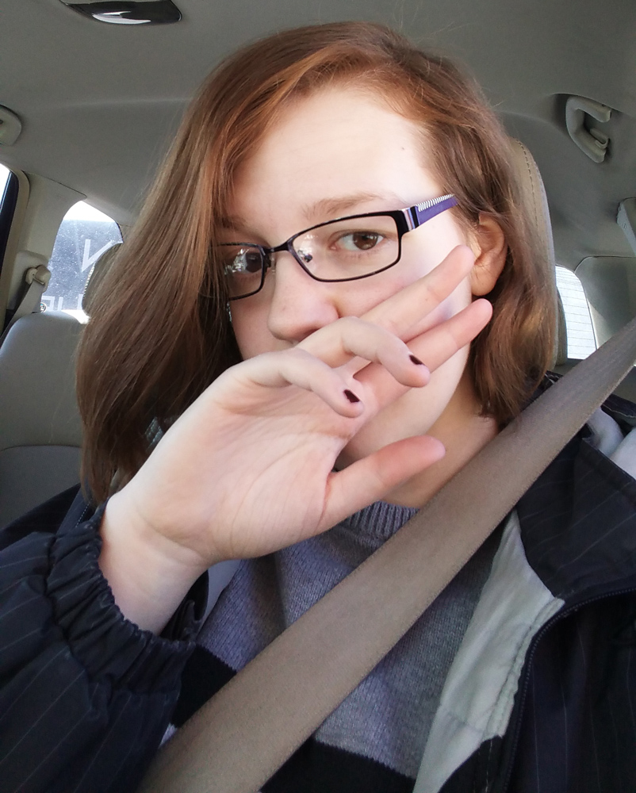
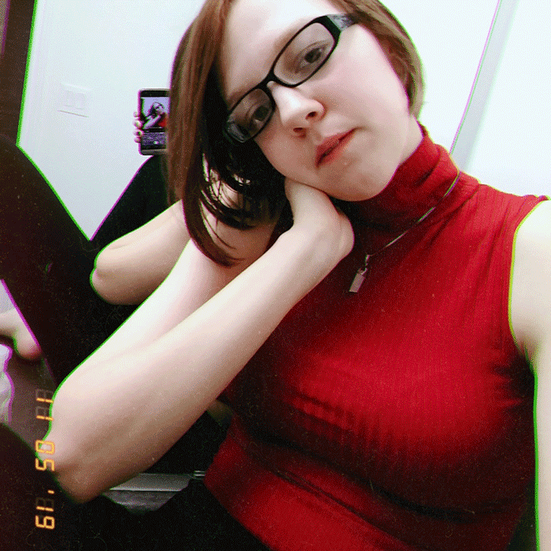
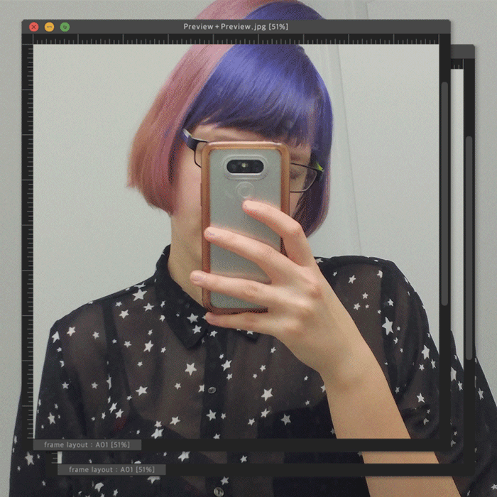
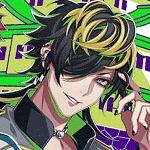
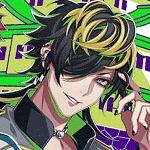

✞ NAME: Reagan
✞ AGE: 20
✞ GENDER: none (they/them)
✞ LOCATION: Ontario, Canada
✞ SEXUALITY: bisexual
✞ WEIGHT: 62 kg
✞ HEIGHT: 181 cm
✞ THREE SIZES: B 89, W 73, H 94
links
kewl linkz:
Other sites I have on neocities dot org:

bio
WHAT THE FUCK IS UP!! I am the titular Reagan ("Reagnyan") character of this website.
Interests: When They Cry (Higurashi, Umineko, Ciconia), Tokyo 7th Sisters, Hypnosismic (mostly just the music), Half-Life (HL1 moreso), The Elder Scrolls (mostly Online)
Hobbies: something something webdev, drinking excessive amounts of caffeine, occasionally trying to play bass, vido gaym
Personality shit:
✞ Virgo sun, Leo moon + asc
✞ INTP 5w4
✞ Chaotic neutral
✞ Assigned Totodile ("naive") by Pokemon Mystery Dungeon
Trivia:
✞ I don't actually care for anime anymore, but I still like some characters and anime-styled games
✞ I can read french, I'm kinda shite now but eh
✞ nya nya :3c
Gallery of ME!
Back in the day people always used to say "never post pics of yourself online, it's dangerous!", but they also used to say that about personal info before it became commonplace and free real estate for advertisers and intrusive websites.
So, who gives a fuck! I have an obsession with taking $hitty pics of myself and I feel like sharing a few here as I prefer it to social media.

 






 
